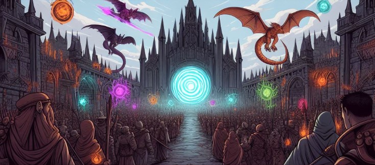

Historia
Kraina Shorltan, wcześniej spokojna i pozbawiona magii, nagle stała się areną chaosu, gdy tajemnicze portale wypluły niebezpieczne potwory. Rząd wysyłał żołnierzy, ale ich szybkie klęski przyniosły ogromne straty ludzkie. Po miesiącach walk wielu stracono, ale część portali zniknęła. Te, które pozostały, zostały otoczone budynkiem, a każdy portal rozdzielono na oddzielne pomieszczenia, aby zapobiec ich połączeniu i wzrostowi siły.
W obliczu coraz bardziej beznadziejnej sytuacji rząd postanowił wykorzystać przestępców do walki z potworami. Zdecydowano się umieścić ich w budynku obok pozostałych portali, zakładając, że to skuteczniejszy sposób na zwalczanie zagrożenia. Gdy rząd był pewien, że wysyła przestępców na pewną śmierć, bogowie nieoczekiwanie okazali litość, obdarowując przestępców mocami. Mimo to, to nie było ułaskawienie od śmierci, a jedynie zmniejszenie ich liczebności, co złożyło się na tajemnicze i nieuchwytne posunięcie boskich istot.